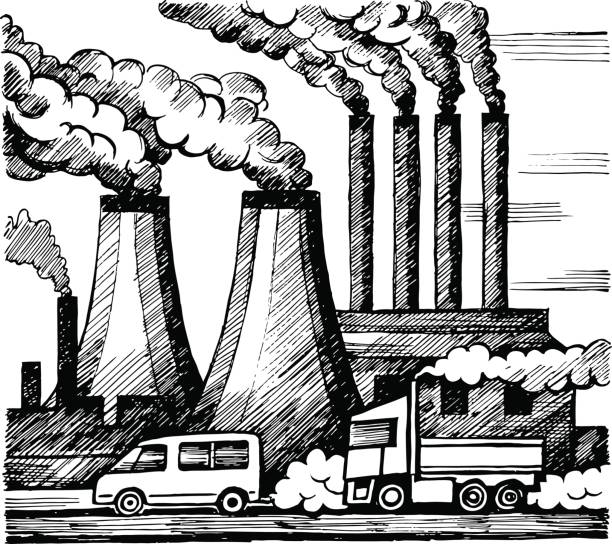
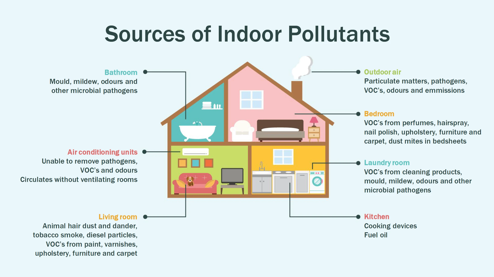
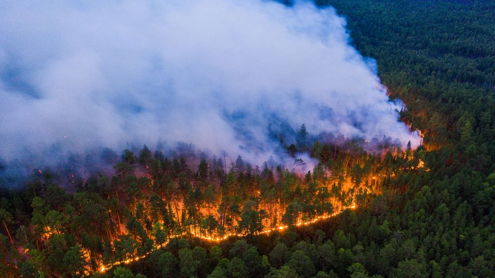

CAUSES OF AIR POLLUTIOIN
1. The Burning of Fossil Fuels
Most of the air pollution takes place due to the burning of fossil fuels such as coal, oil, gasoline to produce energy for electricity or transportation. The release of carbon monoxide in high level indicates how much fossil fuel is burned. This also emits other toxic pollutants in the air. Inhaling air induced with pollutants due to the burning of natural gas and fossil fuel reduces heart's ability to pump enough oxygen causing one to suffer respiratory illness.
2. Industrial Emission 
Industrial activities emit several pollutants in the air that affects the air quality more than we can even imagine. Particulate matter 2.5 and 10, Nitrogen dioxide, Sulfur dioxide, and carbon monoxide are key pollutants that are emitted from industries that use coal and wood as their primary energy source for production of their goods. Industrial pollution effects associated with your health can range from irritation in your eyes and throat to breathing issues, at times can even lead to chronic illness.
3. Indoor Air Pollution 
Use of toxic products also called as Volatile Organic Compounds (VOCs), inadequate ventilation, uneven temperature, and humidity level can cause indoor air pollution, whether you are in office, school or at your comfortable home. House air pollution can take place due to ignorant factors, for instance, smoking tobacco inside a room or leaving mold infected wall untreated. Use of wood stove or space heaters is capable to increase the humidity level which can directly affect the health a person in no time.
4. Wildfires 
Climate change is not just increasing wildfire but also spiking air pollution. Burning stubble and farm residue is also a major contribution to wildfire. It causes increased PM2.5 in the air which collides with other harmful substances like chemical gas and pollen creating smog. Smog makes the air hazy and people find it difficult to breathe.
5. Transportation 
There is no denying that vehicle pollution is the major contributor to air pollution, especially in urban cities. When the car burns gasoline, it emits pollutants in the air which is as harmful as smoking 10 cigarettes a day. Your vehicle emits carbon monoxide, hydrocarbons, nitrogen oxide, and particulate matter. When the vehicle pollution is high in the atmosphere, it creates a hole in the ozone layer contributing to smog and causing various health issues.
6. Open Burning of Garbage Waste
Open burning of garbage is much more harmful to your health and the environment than one may think. As per Engage EPW, Delhi Air Pollution is choking public health. Delhi generates a whopping 9500 tons of waste every day, which makes it India's second waste dumping city. Exposure to open burning of garbage waste can pose serious health risk including cancer, liver issues, impairment of immune system, reproductive functions; can also affect the developing nervous system.